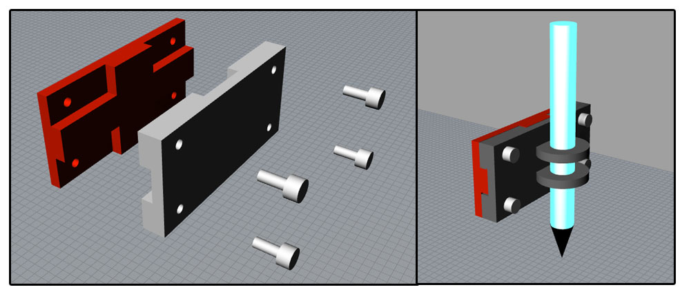
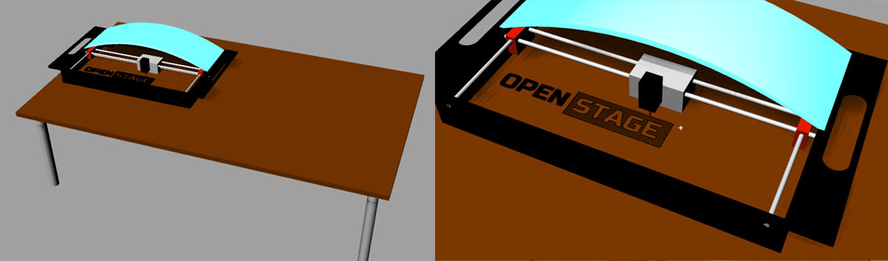

<<<<<<< HEAD
Exercise 2
04.02.2015
Assignment
- Pratice with CAD software
- Draw, model and simulate the final project
Software
To design my final project I decidetd to use Rhinoceros, is a CAD
software with a clean and easy layaut.
With Rhino is simple to draw a 2D design and then extrude it to make a
3D file.
Rhino is not Open Source, and there isn't a Linux version, but
actually the Mac beta version is for free downlad.
Final Project
OPENSTAGE
is a modular open source frame. Built like a tray and based on a 2axis
Cartesian movement, it allows you doing many things in different places.
Sub-division
MOTION
I started thinking about how to move axis, basically I had 3 kind of
motion:
- Cartesian where every axis have a motor, so X ASIS = 1 belt + 1
Motor Y ASIS = 1 belt + 1 Motor
- H-Bot: With a particular kinematic is possible to use a single belt
that do a H loop
- CoreXY: the same kinematics of the H-Bot but using 2 belts to
improve the X backslash
I decided to use CoreXY kinematics, you can learn more over this choice
in the Project Note page.
SNAP TOOLS
During this week I focused my time to develop a standard Tools mount
for my project, I wanted to create a basic snap because in this way
everyone can design and make a perfect support for every kinds of tools.
To design this pieces I learned more about design in 3D and I practiced
with boolean functions.
The boolean function consists in adding, subtract, divide basic surface
like cube cylinder etc in order to create complex geometry.
In the Snap tool case showed below I worked only with cube and
cylinder:
- draw the dimension in 2D
- extrude the first block
- adding two crossing parallepipeds to that we need to align the parts
- use boolean addition to make the first block
- design the second cube and duplicate the first one
- use a boolean subtraction to cancel the first block from the second
cube
- draw 4 cylinder to make the holes for the screw and subtract its from
the 2 parts

DOWNLOAD
CASE
To design case of the basic XY stage I'm ispired on HANDIBOT and I
designed a case like a tray, in this way you can collocate OPENstage
wherever you want and is possible to engrave/mill/write in place that
aren't accesible to the other machines

DOWNLOAD
Rhino is a good program to start with 2D and 3D design, it offer complex
function but also very basic command with a easy interface. Boolean
function are very useful to make complex parts without model it from 0.
Useful links